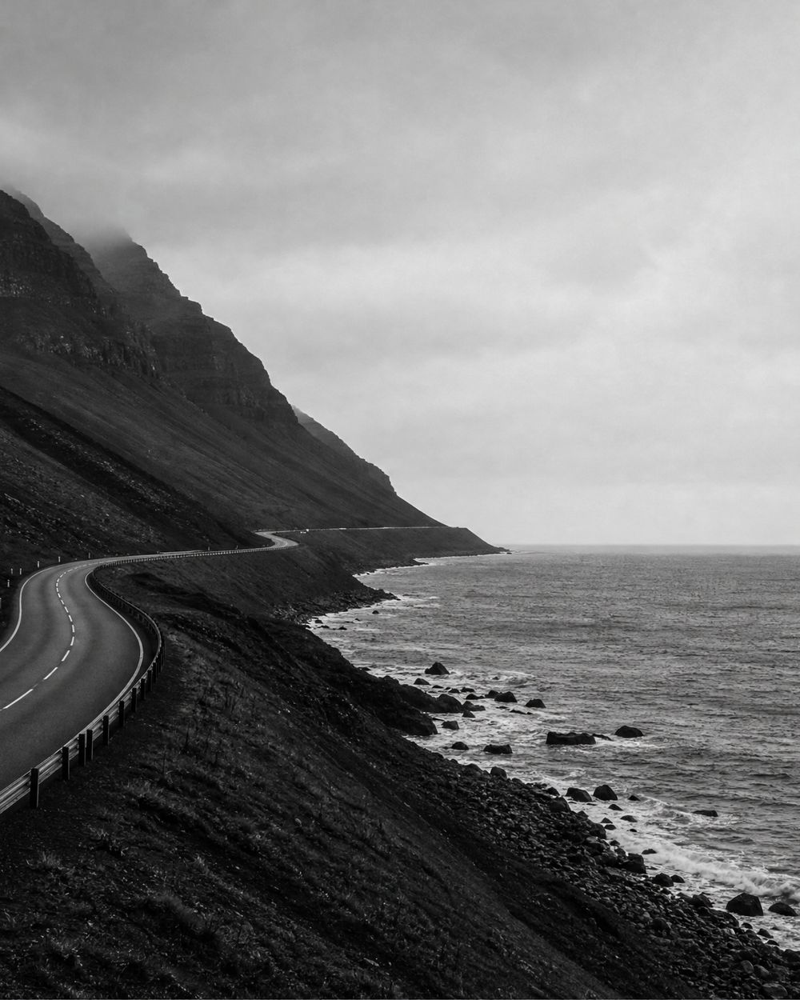
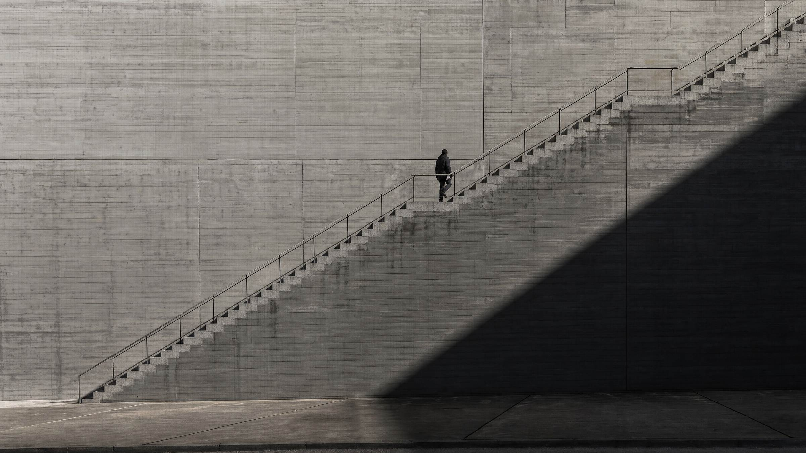
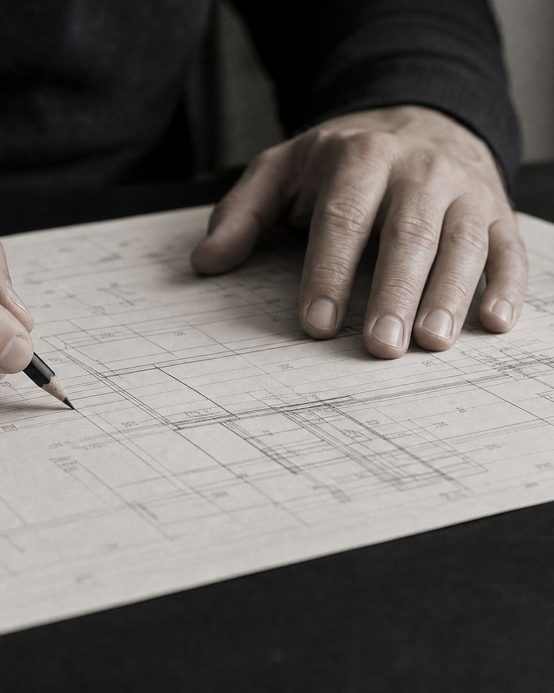
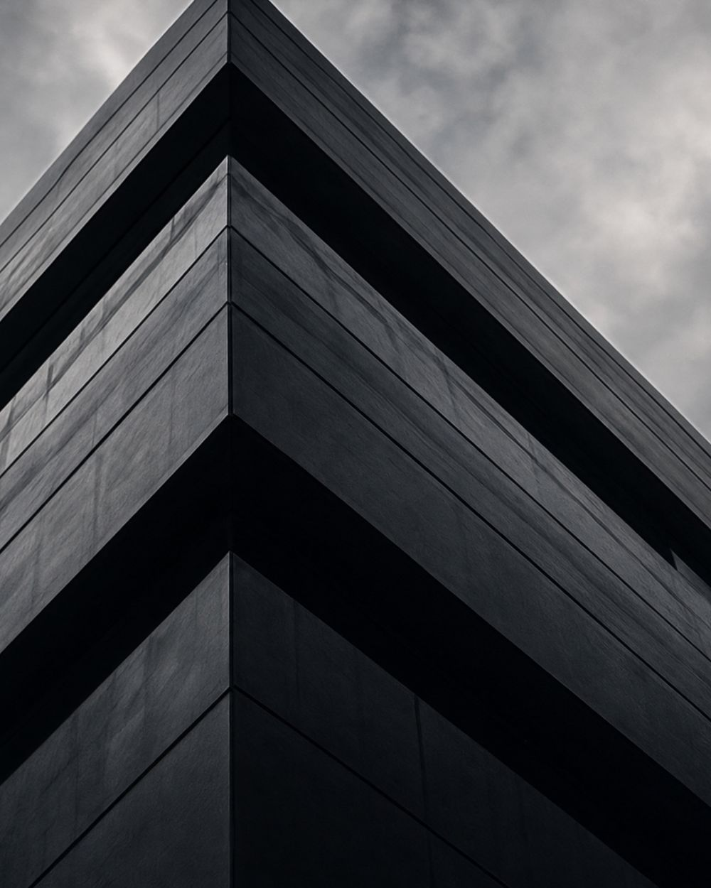
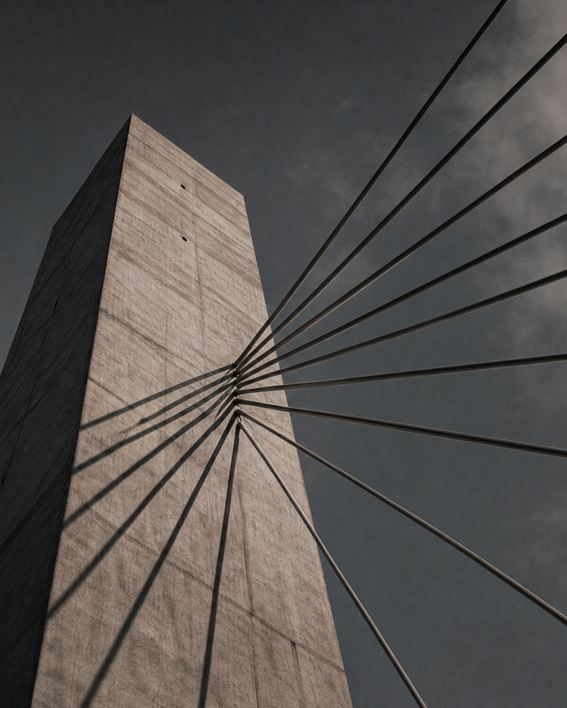
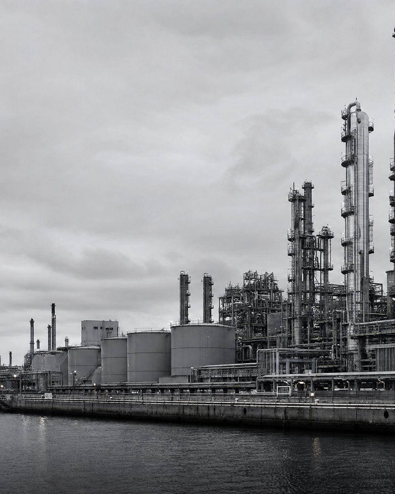
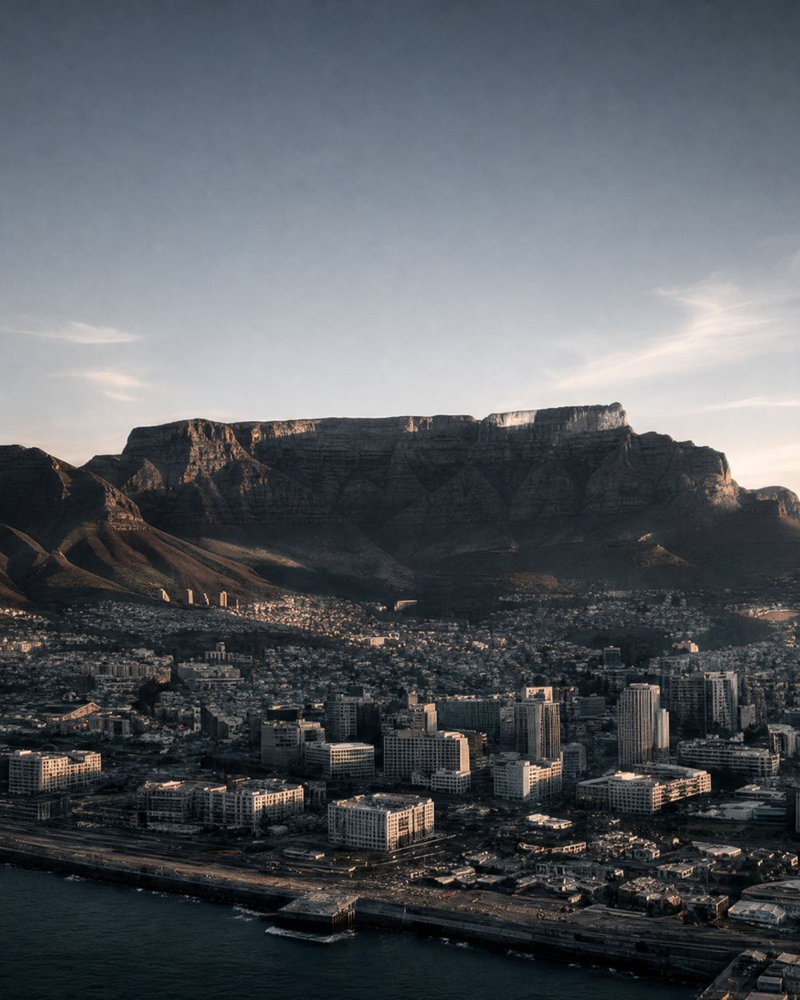
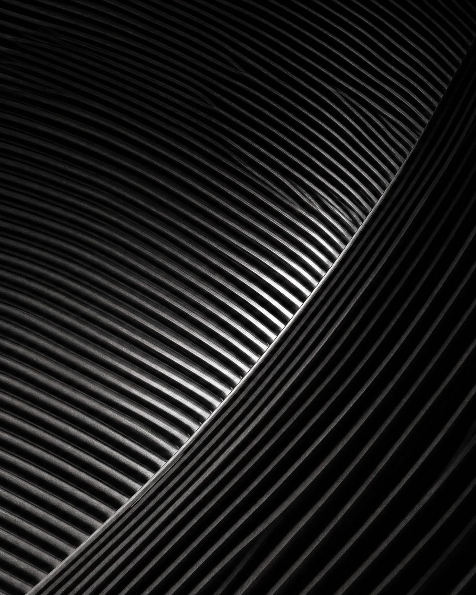
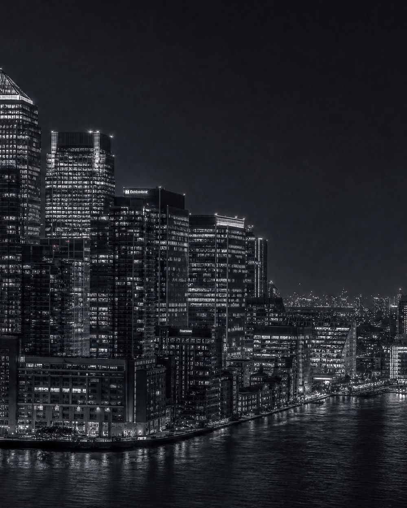
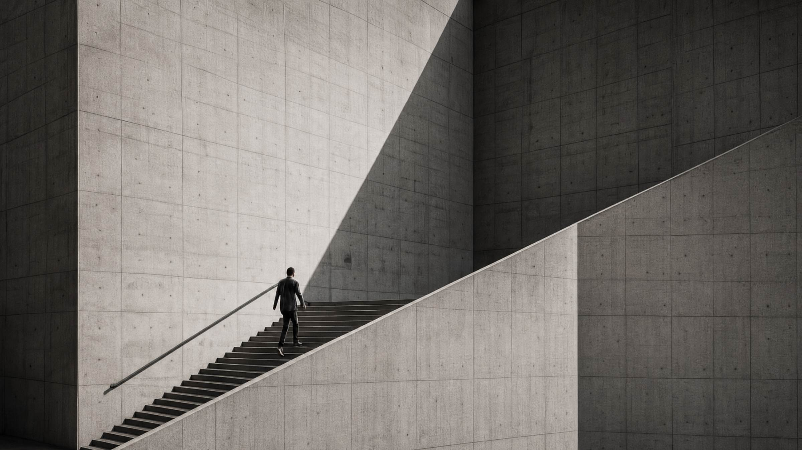

01 / 05
Identify
We look for markets with structural growth, real problems and room to build.

Opportunity is everywhere. Execution is not.
Kamb looks for businesses, technologies and opportunities where disciplined execution can create disproportionate value. We build from the ground up, acquire where there is strategic advantage and invest where exceptional founders and businesses have the potential to compound.

We look for markets with structural growth, real problems and room to build.

We build from first principles, assembling the people, technology and operating infrastructure.

We acquire where ownership, capital and direction can unlock the next stage of growth.

We back founders and businesses with the potential to lead their category outright.

We build businesses that become better, stronger and more valuable every year.

See what’s next.
Vision is the ability to see opportunity before it becomes obvious. Kamb looks beyond the current market to identify structural shifts, emerging technologies, underserved opportunities and businesses with the potential to become significantly more valuable over time.
We don’t follow markets. We look for where they are going.

Know what matters.
Scale requires discipline. Kamb concentrates resources where they can create the greatest impact, prioritising the opportunities, markets, technologies and businesses with the strongest potential rather than spreading attention across everything that is possible.
Focus turns ambition into a plan.
Make it happen.
Ideas are abundant. Execution creates value. Kamb is built around action: building, acquiring, testing, measuring, improving and scaling. Strategy matters, but only when it translates into decisions, systems and results.
We move from opportunity to operation.

Build what lasts.
The measure of a business is not how quickly it starts. It is what it becomes. Kamb builds for meaningful, measurable and enduring outcomes: stronger companies, greater enterprise value, better products, stronger teams and businesses capable of compounding over time.
The objective is not activity. It is value.

Every company, investment and opportunity answers the same five before anything else happens.
Is the opportunity real?
Does it solve something meaningful?
Can it become significantly larger?
Can we make it better?
Will it matter over the long term?
If the answer is yes, we build.